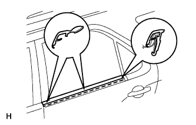

NẸP DỌC CỬA SAU > LẮP |
| 1. LẮP GIOĂNG BÊN NGOÀI KÍNH CỬA SAU TRÁI |
|  |
Cài khớp các vấu để lắp gioăng.
| 2. LẮP ỐP TRANG TRÍ CỬA SAU TRÁI |
 |
Cài khớp 10 kẹp để lắp ốp cửa.
| 3. LẮP ĐẾ PHÍA TRÊN TỰA TAY CỬA SAU TRÁI |
| 4. LẮP CỤM TAY QUAY BỘ NÂNG HẠ KÍNH CỬA SAU (w/o cửa sổ điện) |
 |
Lắp phanh hãm vào tay nắm bộ nâng hạ.
Với cửa sổ đã được đóng hoàn toàn, hãy lắp tay nắm nâng hạ cửa và vòng đệm vào trục nâng hạ, như được chỉ ra trong hình vẽ.
| 5. NỐI CÁP VÀO CỰC ÂM ẮC QUY |
| 6. TIẾN HÀNH THIẾT LẬP BAN ĐẦU |
Tiến hành thiết lập ban đầu (Xem trang Kích chuột vào đây).
| 7. KIỂM TRA ĐÈN CẢNH BÁO SRS |
Kiểm tra đèn báo SRS (Xem trang Kích chuột vào đây).